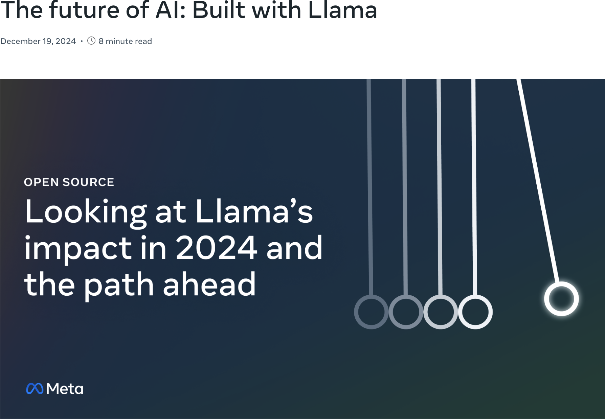
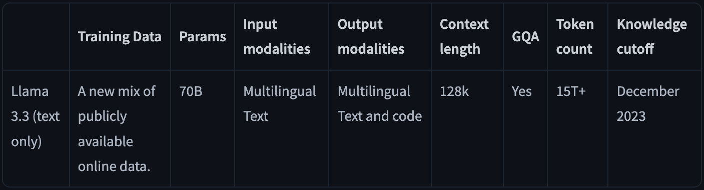
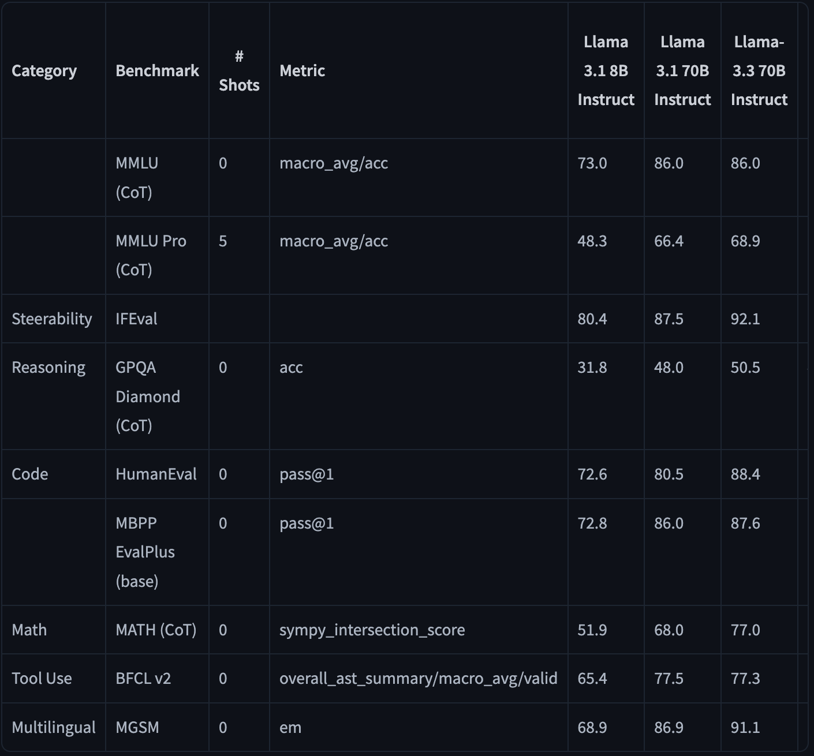
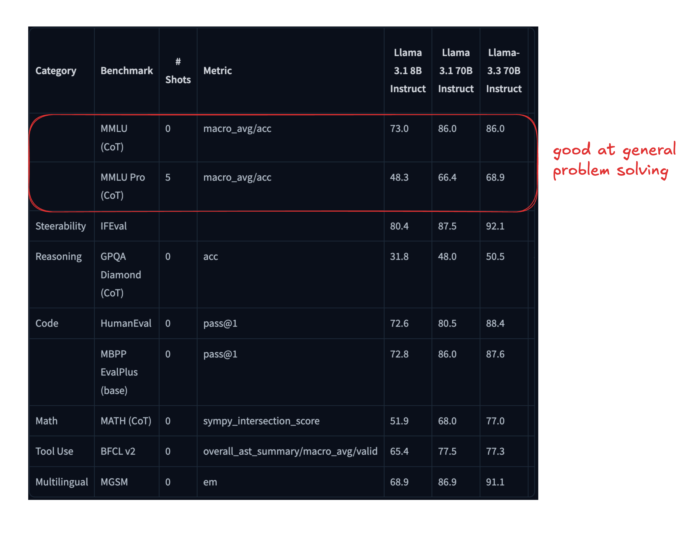
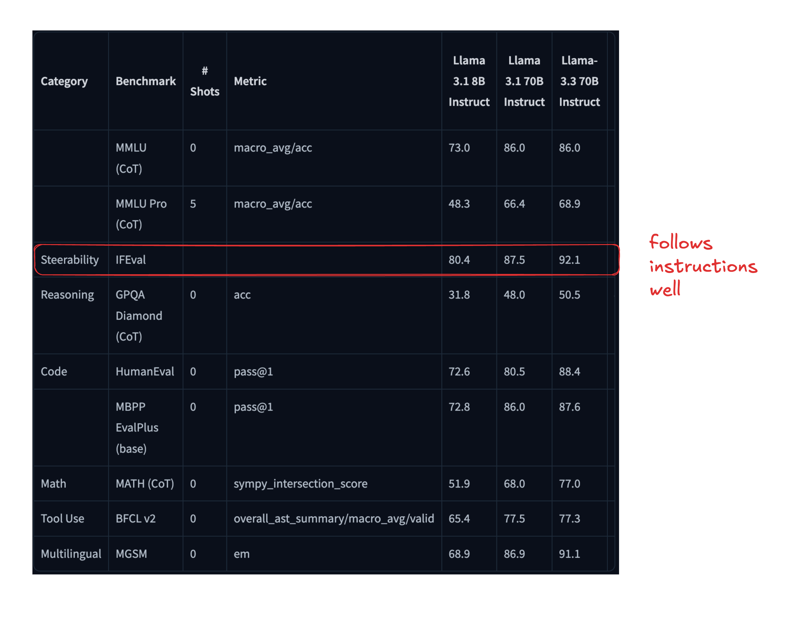
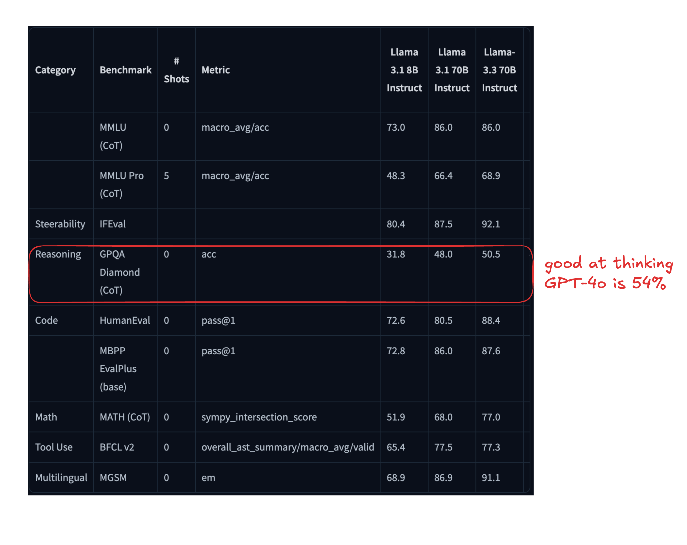
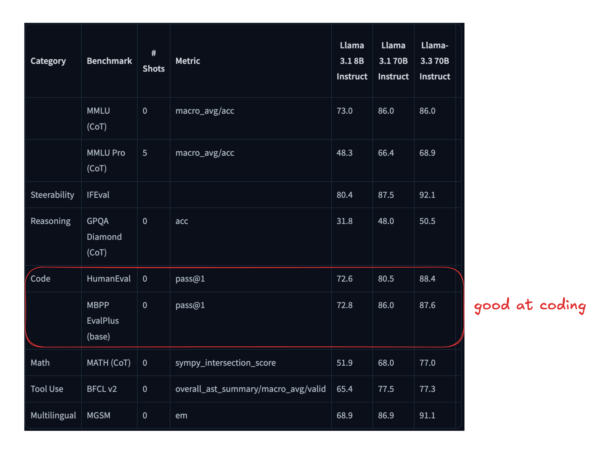
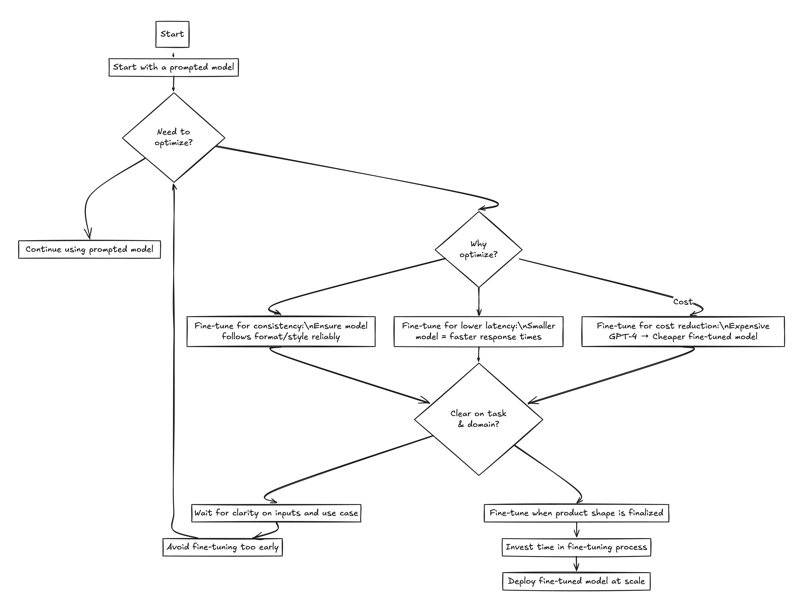

class: center, middle # Getting Started with Llama3 ## Lucas Soares ### 12-03-2025 --- # Methodology Notes -- 1. Presentation Block -- 2. Notebook Demo -- 3. Quick Q&A + Summary -- 4. Optional Exercise During Q&A -- 5. Repeat --- # LLMs Predict the Next Word <img src="../notebooks/assets-resources/text-prediction-blnks.png" style="width: 100%"> --- # LLMs Predict the Next Word <img src="../notebooks/assets-resources/chatgpt-text-prediction-1.png" style="width: 80%; margin-top: -10pt; margin-left: 80px; margin-top: -10pt; margin-left: 80px"> --- # LLMs Predict the Next Word <img src="../notebooks/assets-resources/chatgpt-text-prediction-2.png" style="width: 80%; margin-top: -10pt; margin-left: 80px"> --- # LLMs Predict the Next Word <img src="../notebooks/assets-resources/chatgpt-text-prediction-3.png" style="width: 80%; margin-top: -10pt; margin-left: 80px"> --- # LLMs Predict the Next Word <img src="../notebooks/assets-resources/chatgpt-text-prediction-4.png" style="width: 80%; margin-top: -10pt; margin-left: 80px"> --- # LLMs Predict the Next Word <img src="../notebooks/assets-resources/chatgpt-text-prediction-5.png" style="width: 80%; margin-top: -10pt; margin-left: 80px"> --- # LLMs Predict the Next Word <img src="../notebooks/assets-resources/chatgpt-text-prediction-6.png" style="width: 80%; margin-top: -10pt; margin-left: 80px"> --- # LLMs Predict the Next Word <img src="../notebooks/assets-resources/chatgpt-text-prediction-7.png" style="width: 80%; margin-top: -10pt; margin-left: 80px"> --- <img src="../notebooks/assets-resources/llm_predicts_pancakes.png" style="width: 100%;margin-top: 100pt;"> --- <img src="../notebooks/assets-resources/llm-prob-distributions-context.png" style="width:100%; margin-top: 40pt;"> --- # Introduction to Llama 3  --- # Llama3 Releases - Meta Released Llama 3 in April of 2024 - Llama 3.1 was released in July of 2024 - Llama 3.2 was released in September of 2024 - Llama 3.3 was released in December of 2024 --- # Llama 3 Series - Open source with a Commercial license -- - The latest and greatest: Llama3.3  <p style="font-size: 14px; margin-top: 200px; margin-left: 0px"> <a href='https://huggingface.co/meta-llama/Llama-3.3-70B-Instruct'>Hugging Face - Llama 3.3 70B Instruct</a> </p> --- # Llama 3.3 Evaluation Results  <p style="font-size: 14px; margin-top: 0px; margin-left: 0px"> <a href='https://huggingface.co/meta-llama/Llama-3.3-70B-Instruct'>Hugging Face - Llama 3.3 70B Instruct</a> </p> --- # Llama 3.3 Evaluation Results  <p style="font-size: 14px; margin-top: 0px; margin-left: 0px"> <a href='https://huggingface.co/meta-llama/Llama-3.3-70B-Instruct'>Hugging Face - Llama 3.3 70B Instruct</a> </p> --- # Llama 3.3 Evaluation Results  <p style="font-size: 14px; margin-top: 0px; margin-left: 0px"> <a href='https://huggingface.co/meta-llama/Llama-3.3-70B-Instruct'>Hugging Face - Llama 3.3 70B Instruct</a> </p> --- # Llama 3.3 Evaluation Results  <p style="font-size: 14px; margin-top: 0px; margin-left: 0px"> <a href='https://huggingface.co/meta-llama/Llama-3.3-70B-Instruct'>Hugging Face - Llama 3.3 70B Instruct</a> </p> --- # Llama 3.3 Evaluation Results  <p style="font-size: 14px; margin-top: 0px; margin-left: 0px"> <a href='https://huggingface.co/meta-llama/Llama-3.3-70B-Instruct'>Hugging Face - Llama 3.3 70B Instruct</a> </p> --- class: center, middle <h1> <span style="background-color: lightgreen"> Whiteboard - Local LLMs Offering + Tooling Breakdown </span> </h1> --- class: center,middle # Q&A / Break --- class: center,middle <h1> <span style="background-color: lightgreen"> Notebook Demo - Introduction to Using Local Models Easily with Ollama </span> </h1> --- class: center,middle # Q&A / Break --- # Query Your Docs Locally with Llama 3 - Need for LLMs with access to context-relevant data. <img src="../notebooks/assets-resources/private-qa-llama2.png" width="50%" style="margin-left: 30pt;"> --- # Query Your Docs Locally with Llama 3 - Privacy concern with closed source LLMs. <img src="../notebooks/assets-resources/llama2-rag-intro.png" width="50%" style="margin-left: 30pt;"> --- # Query Your Docs Locall with Llama 3 - Solution? Local LLMs! (like Llama 3!) <img src="../notebooks/assets-resources/llama2-rag-limitations.png" width="50%" style="margin-left: 30pt;"> --- # RAG with Llama 3 - RAG - Retrieval Augmented Generation <img src="../notebooks/assets-resources/llama2-rag-what-why.png" width="80%"> --- # RAG with Llama 3 <img src="../notebooks/assets-resources/llama2-embeddings-content.png" width="80%"> --- <img src="../notebooks/assets-resources/rag-llama3/rag-llama3.001.jpeg" style="width: 130%; margin-left:-100pt";> <p style="font-size: 14px; margin-top:50pt;"> <a href='https://python.langchain.com/docs/use_cases/question_answering/'>Langchain Docs</a> </p> --- <img src="../notebooks/assets-resources/rag-llama3/rag-llama3.002.jpeg" style="width: 130%; margin-left:-100pt";> <p style="font-size: 14px; margin-top:50pt;"> <a href='https://python.langchain.com/docs/use_cases/question_answering/'>Langchain Docs</a> </p> --- <img src="../notebooks/assets-resources/rag-llama3/rag-llama3.004.jpeg" style="width: 130%; margin-left:-100pt";> <p style="font-size: 14px; margin-top:50pt;"> <a href='https://python.langchain.com/docs/use_cases/question_answering/'>Langchain Docs</a> </p> --- <img src="../notebooks/assets-resources/rag-llama3/rag-llama3.005.jpeg" style="width: 130%; margin-left:-100pt";> <p style="font-size: 14px; margin-top:50pt;"> <a href='https://python.langchain.com/docs/use_cases/question_answering/'>Langchain Docs</a> </p> --- <img src="../notebooks/assets-resources/rag-llama3/rag-llama3.006.jpeg" style="width: 130%; margin-left:-100pt";> <p style="font-size: 14px; margin-top:50pt;"> <a href='https://python.langchain.com/docs/use_cases/question_answering/'>Langchain Docs</a> </p> --- <img src="../notebooks/assets-resources/rag-llama3/rag-llama3.007.jpeg" style="width: 130%; margin-left:-100pt";> <p style="font-size: 14px; margin-top:50pt;"> <a href='https://python.langchain.com/docs/use_cases/question_answering/'>Langchain Docs</a> </p> --- <img src="../notebooks/assets-resources/rag-llama3-pipeline/rag-llama3-pipeline.001.jpeg" style="width: 130%; margin-left:-100pt";> --- <img src="../notebooks/assets-resources/rag-llama3-pipeline/rag-llama3-pipeline.002.jpeg" style="width: 130%; margin-left:-100pt";> --- <img src="../notebooks/assets-resources/rag-llama3-pipeline/rag-llama3-pipeline.003.jpeg" style="width: 130%; margin-left:-100pt";> --- <img src="../notebooks/assets-resources/rag-llama3-pipeline/rag-llama3-pipeline.004.jpeg" style="width: 130%; margin-left:-100pt";> --- <img src="../notebooks/assets-resources/rag-llama3-pipeline/rag-llama3-pipeline.005.jpeg" style="width: 130%; margin-left:-100pt";> --- <img src="../notebooks/assets-resources/rag-llama3-pipeline/rag-llama3-pipeline.006.jpeg" style="width: 130%; margin-left:-100pt";> --- class: center, middle <h1> <span style="background-color: lightgreen"> Notebook Demo - Local RAG with Llama 3 </span> </h1> --- class: center, middle # Q&A / Break --- # Local Agents with Llama 3 -- <img src="../notebooks/assets-resources/agent-loop.png" width="1500"> <p class="footnote"> <a href='https://blog.langchain.dev/openais-bet-on-a-cognitive-architecture/'> Explanation of the agent loop in cognitive architectures. </a> </p> --- # Practical Use Case: Private Docs Chatbot -- - **Scenario**: An LLM-powered chatbot designed to assist users by retrieving information from private documents. -- - **User Input**: User asks about specific details from an internal document. -- - **LLM Decision**: Determines if the requested information requires search the document repository. -- - **Action Taken**: If a search is required, the agent retrieves relevant document sections and provides a concise response based on the content. <p class="footnote"> <a href='https://langchain-ai.github.io/langgraph/concepts/high_level/#deployment'> Practical use case of LLM agents in customer support. </a> </p> --- class: center, middle <h1> <span style="background-color: lightgreen"> Notebook Demo - Tool Calling/Structured Outputs and local agents with Llama 3 </span> </h1> --- class: center, middle # Q&A / Break --- class: center, middle # Fine Tunning Llama 3 --- class: center, middle <h1> <span style="background-color: lightgreen"> Whiteboard - Fine Tunning Llama 3: what, when, why and beyond </span> </h1> --- # Fine Tunning Llama 3 - <span style="color: red">What is fine-tuning?</span> -- - <span style="color: green">It's the process of training a smaller model on a specific task leveraging a domain-specific dataset.</span> -- - <span style="color: red">What does it do?</span> -- - <span style="color: green">Fine-tuning transfers the pre-trained model’s learned patterns and features to new tasks, improving performance and reducing training data needs.</span> -- - <span style="color: red">Why fine-tune?</span> -- - <span style="color: green">To improve the model's performance on a specific task.</span> -- - <span style="color: red">When to fine-tune?</span> ---  --- class: center, middle <h1> <span style="background-color: lightgreen"> Notebook Demo - Fine-Tuning Llama 3 - Walkthrough </span> </h1> --- class: center, middle # Q&A / Break --- class: center, middle <h1> <span style="background-color: lightgreen"> Notebook Demo - End To End Example with Llama 3 </span> </h1> --- # References 1. [Llama 3.3 Model Card](https://www.llama.com/docs/model-cards-and-prompt-formats/llama3_3/) 2. [Fine Tuning Video](https://www.youtube.com/watch?v=-hYqt8M9u_M&t=604s) 3. [High Quality Structured Report Generation Demo](https://youtu.be/E04rFNtwFcA?si=XM_nfu--7Tx41jvp) 4. [Llama Cookbook – Finetuning](https://github.com/meta-llama/llama-cookbook/tree/main/getting-started/finetuning) 5. [Llama Recipes](https://github.com/meta-llama/llama-recipes) 6. [Generating Synthetic Data](https://eugeneyan.com/writing/synthetic/) 7. [Llama Cookbook – End-to-End Use Cases](https://github.com/meta-llama/llama-cookbook/tree/main/end-to-end-use-cases) 8. [Structured Outputs with Ollama](https://ollama.com/blog/structured-outputs) 9. [Chunk Size Explanation](https://vectify.ai/blog/LargeDocumentSummarization?utm_source=substack&utm_medium=email) 10. [Embeddings + Llama by Simon Willison](https://simonwillison.net/2023/Oct/23/embeddings/#answering-questions-with-retrieval-augmented-generation) 11. [Embeddings + Parquet for Small Projects](https://minimaxir.com/2025/02/embeddings-parquet/) 12. [Awesome Local LLMs](https://github.com/vince-lam/awesome-local-llms) 13. [LLM-Driven Data Engineering](https://github.com/DataExpert-io/llm-driven-data-engineering) 14. [Text Chunking in RAG](https://www.youtube.com/watch?v=GYj4Ay7SdWw) 15. [Llama Resources – AI.Meta](https://ai.meta.com/llama/#resources) 16. [Llama 3 Paper (arXiv)](https://arxiv.org/pdf/2408.13296) ---